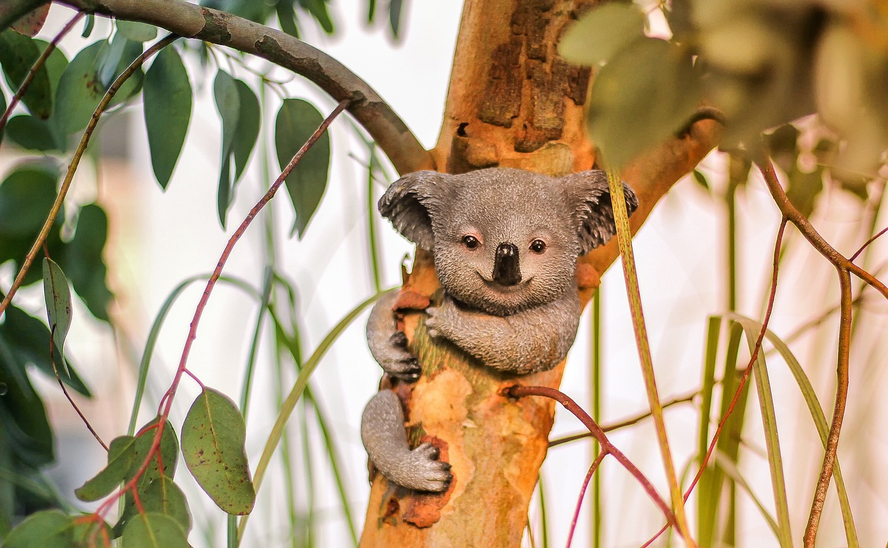

Koalas often sleep up to 18 hours a day because they consume mostly eucalyptus leaves, which are low in nutrients.
Koalas are easily distinguished from other animals because they have no tail, large heads with round, fluffy ears, and a spoon-shaped nose. Koalas from the north are generally smaller and silver grey, while koalas from the south are often bigger and a chocolate brown color.